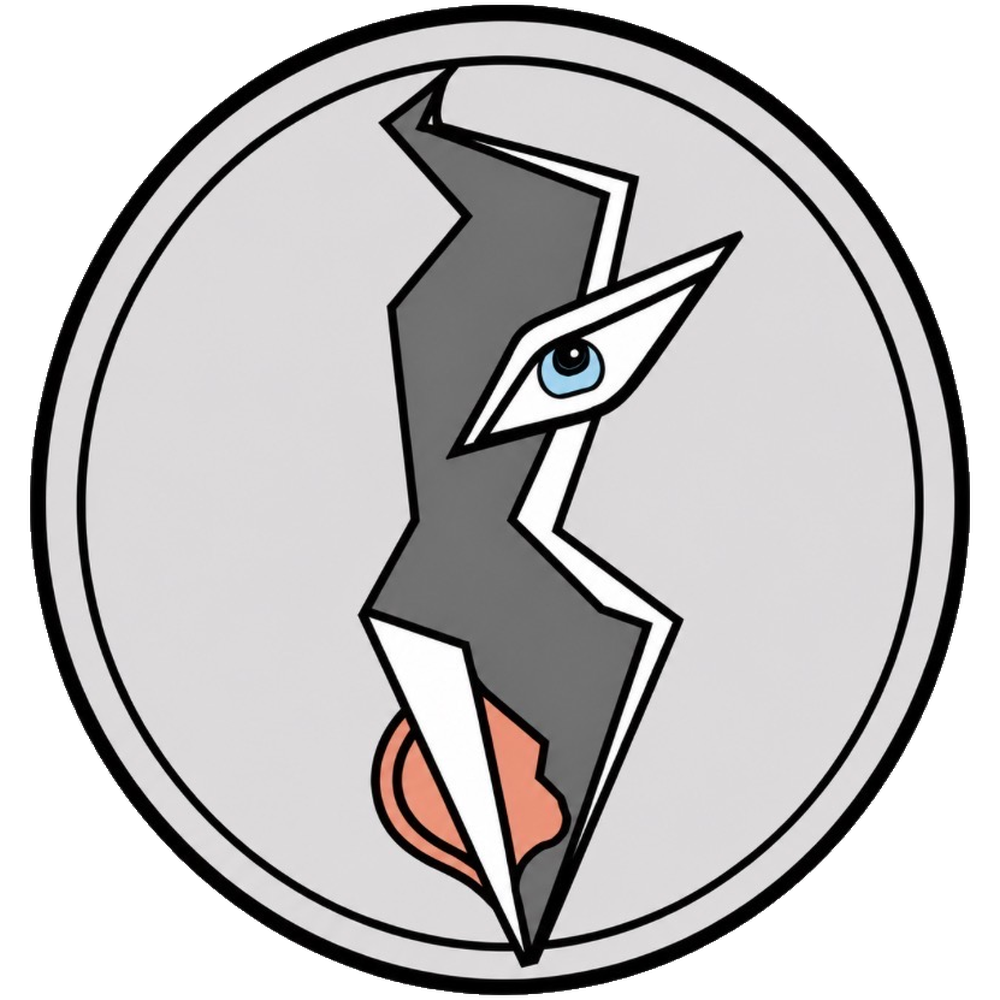

04.2 / 檔案 Archive
空間與設計 Space and Design
在成為藝術家之前，生命已經悄悄長進空間裡。 Life had already grown into space.
將收錄
室內設計、空間觀看、牆面與柱體之中的線條生命。Design, space, walls, columns, and line-life.
整理方向
把三十餘年的空間經驗，與現在的創作語彙慢慢連接起來。Connecting space experience with creation.

又禎宇宙Yuzen Universe04.2 / 檔案 Archive
在成為藝術家之前，生命已經悄悄長進空間裡。 Life had already grown into space.
室內設計、空間觀看、牆面與柱體之中的線條生命。Design, space, walls, columns, and line-life.
把三十餘年的空間經驗，與現在的創作語彙慢慢連接起來。Connecting space experience with creation.